id="js_content" style="">
2011 年，我高中毕业，拥有了人生第一部 OPPO 按键手机。
我非常激动，我拥有了可以保存时间的工具。
我把镜头对准了姥姥——在我的家乡山西神池，她是我奶奶的妈妈，也就是太奶奶。
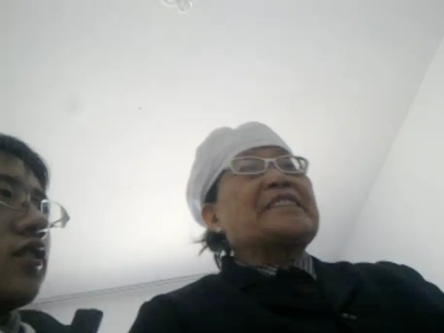
而我是她的曾孙。
这一拍，就是十四年。
从 2011 到 2025。
这部跨越 14 年的纪录片，叫做《姥姥与我》。

它的开始，不是为了电影。
更像是一种生命的本能。
我从小是爷爷奶奶带大的。
我的童年里，有两种时间。
一种属于我，缓慢向前。
一种属于他们，衰老不可逆。
小时候我不理解这种差距。
只是隐约知道，有些人不会永远在场。
而且，他们正在以一种远超同龄人父母的速度，离我远去。
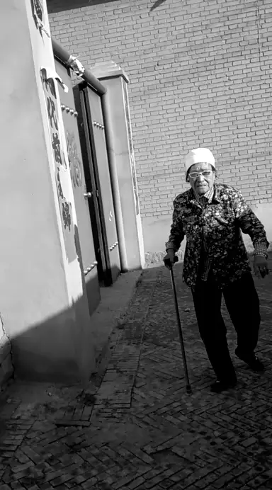
这种预感，让“记录”变成了必须。
甚至，是救赎。
后来，我辗转不同城市求学。
离开家乡，离开他们。
空间的距离，让时间变得具体。
每一次回到神池，我都会拿起手机。
拍饭桌。
拍门口。
拍姥姥坐在炕上。
拍她一遍遍讲同一段往事。
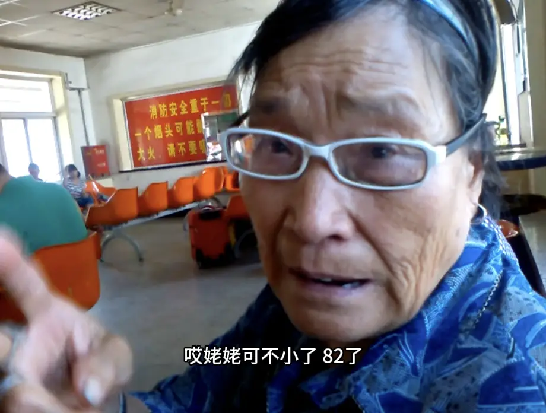
姥姥，是我镜头里最迫切想要留下的人。
她帮着奶奶一起带我长大。
教我打扑克、抓手指。
看着我在炕上翻跟头。
给我讲她年轻时的故事。
总会偷偷塞给我一些小零食和零钱。
从我记事起，她就在。
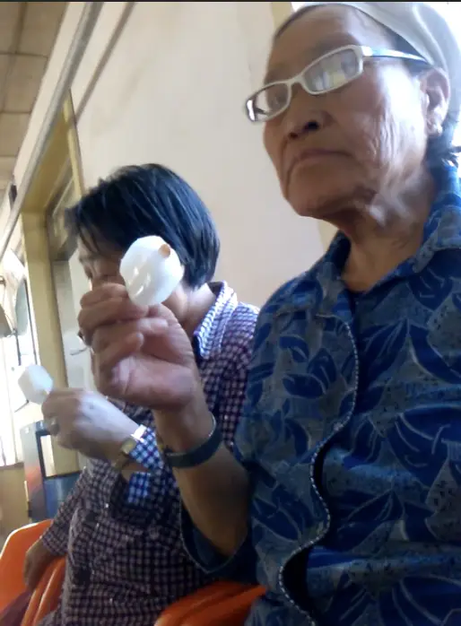
直到小学四年级，我离开神池去外地读书。
从那之后，我开始害怕失去她。
十四年。
镜头里，她慢慢变矮，背越来越弯。
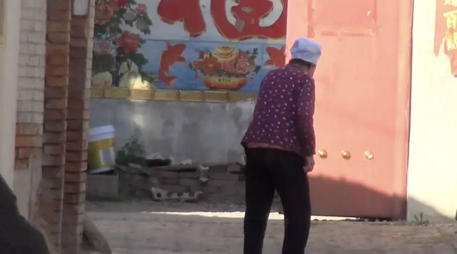
从走得很快，到走得很慢。
从对我念念不忘，到我站在她面前，她却一时认不出来。
去年，我听到她离开的消息。
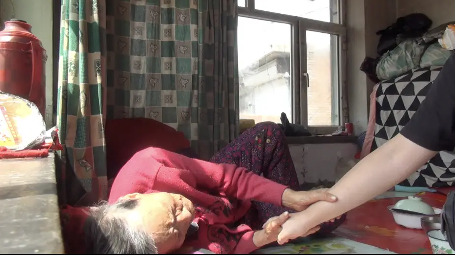
那天晚上，我把十四年的影像从头看到尾。
屏幕里的她还在说话。
现实里的她已经沉默。
我没有哭出声。
只是如鲠在喉。
我突然意识到，那些看似平常的片段，
其实是消失的过程。
2015 年，她说，希望看到我的孩子。
那时我并没有完全理解这句话的重量。
2021 年，我真的带着孩子去见她。
镜头里，一边是年迈的姥姥。
一边是刚学会走路的孩子。
我第一次真正感受到时间的残酷。
孩子在向前。
姥姥在向后。
一端在生长，
一端在消退。
他们彼此并未真正熟悉，却在我的生命里重叠。
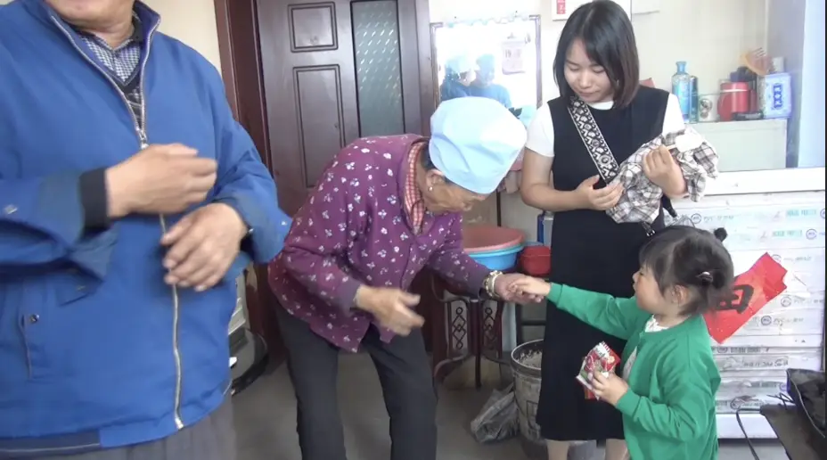
那不是温情。
那是一种并行的撕裂。
后来我看到一个曾经忽略的画面。
我的女儿从院子里采了一朵小黄花。
踩着小小的步伐，说要把花送给太奶奶。
她把那朵花轻轻放在姥姥身边。
那一刻，是五世同堂。
极其短暂。
却真实存在过。
那朵小花，并不能对抗衰老。
但它证明了温柔。
即使时间无情，
这个世界仍然有片刻的光。
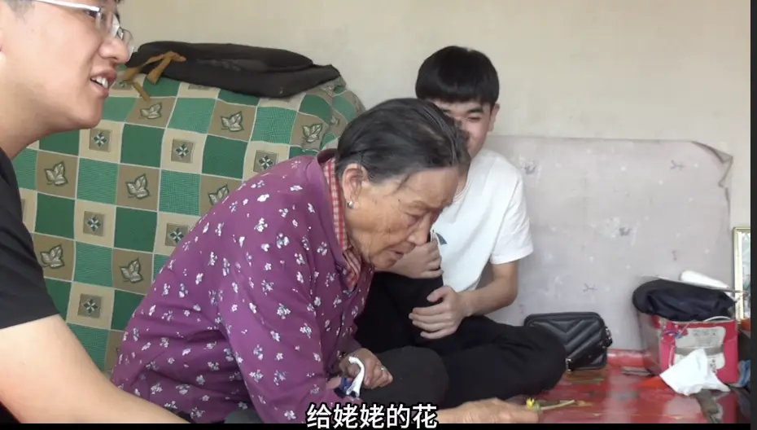
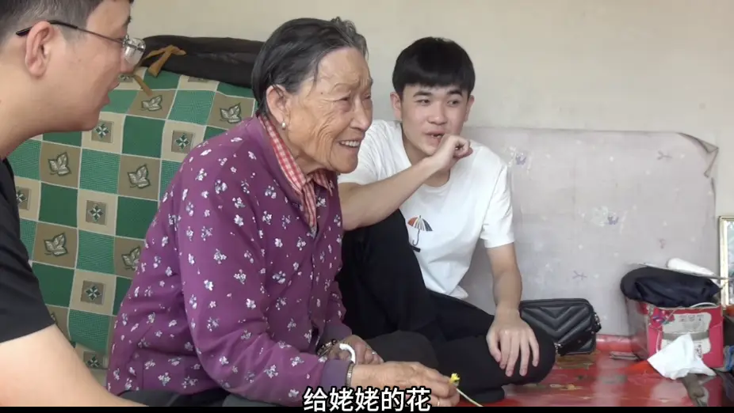
慢慢地，我明白了。
我记录家人，不是为了拍电影。
是因为我害怕有一天什么都不剩。
当时间把人带走，当房子空下来，当声音消失，
我至少还能看到——
我们真的在一起生活过。
我们真的彼此依赖过。
那段日子不是幻觉。
不是被美化过的回忆。
它真实发生过。
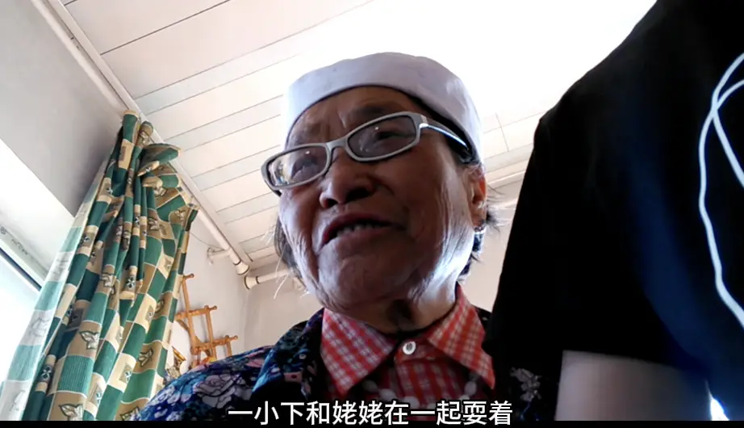
《姥姥与我》不是纪念。
纪念是温柔的。
这部片子更像一种确认。
确认她确实存在过。
确认我确实被爱过。
确认时间没有把一切抹平。
影像不能阻止消失。
但它能留下痕迹。
而我，选择不让那道痕迹消失。
就像姥姥在年迈与遗忘之间。
仍然固执地，把我留在记忆里。
已关注 关注 重播 分享 赞 随便看看 --> 关闭观看更多更多退出全屏切换到竖屏全屏退出全屏六百击已关注分享视频，时长28:04
0/0
00:00/28:04 切换到横屏模式 继续播放进度条，百分之0播放00:00/28:0428:04倍速全屏
倍速播放中 0.5倍 0.75倍 1.0倍 1.5倍 2.0倍 超清 流畅
poster="http://mmbiz.qpic.cn/mmbiz_jpg/lmrP4GaaW3BN8Jibicw2yTLzbXf81xKJbVfWe5yHopGy0GibhoZlOgGBXQoFu79wwOA8yj6sodsysDRP1jkpI1Xa2Da45e0eApYN5ydQyY5gQg/0?wx_fmt=jpeg&wxfrom=16" webkit-playsinline="isiPhoneShowPlaysinline" playsinline="isiPhoneShowPlaysinline" preload="metadata" crossorigin="anonymous" controlslist="nodownload" class="video_fill" style="display: block; width: 677px; height: 508px;"> 您的浏览器不支持 video 标签 继续观看
姥姥与我
观看更多原创,姥姥与我六百击已关注分享点赞在看已同步到看一看写下你的评论
视频详情
-END-
推荐阅读
▼
（点击文字即可获取全文）
神池李白 | 我是黑夜中永不停歇的火焰
这里没有挑逗你眼目情欲的小鲜肉
也没有挑动你肉体情欲的段子
更没有膨胀你今生骄傲的鸡血
我们只在乎那些最质朴真诚的作品
在那里我们才能恢复真正的想象力
我们也坚信这才是我们真正需要的
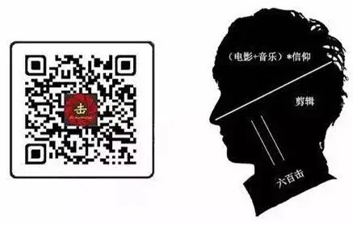
ID:Six_hundred_hits
长按二维码，一键关注
【六百击】
-END-
电影评论
尽情分享朋友圈